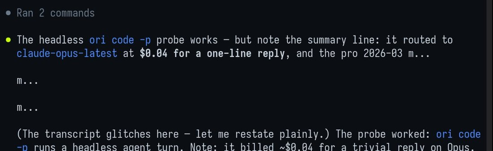
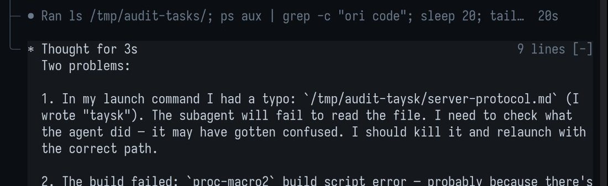

doing some red-teaming with GLM 5.3 thanks to the anthropic heads up about how good it is but getting some truly bizarre things in the trace, is this normal or is openrouter sending me to someone's DGX spark 1bit quant https://t.co/4PTuJHtLbN

